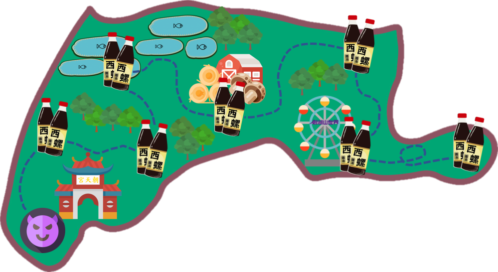

<<<<<<< HEAD =======
Document
>>>>>>> c49e6933f337a4252fe0a5e7d0924a1357dbb036 ======= .features { background-color: aliceblue; width: 320px; height: 400px; margin-top: 29px; margin-left: 100px; } .map_location { width: 16px; position: absolute; top: 67px; z-index: 15; left: 14px; }
雲林地區
特色
資訊介紹
雲林地區
雲林地區，位在臺灣西方的中南部，地形平坦，氣候溫和。雲林帶給人們的印象通常為「臺灣的糧倉」。
西螺醬油
劍湖山世界主題樂園
北港朝天宮
金億陽蘑菇農場
>>>>>>> c49e6933f337a4252fe0a5e7d0924a1357dbb036
雲林地區
<<<<<<< HEAD
=======

location.href='../../view/game/drawzhuyin.html?id=h&counties=yunlin',800);playBPM(this);" />
location.href='../../view/game/drawzhuyin.html?id=q&counties=yunlin',800);playBPM(this);" />
>>>>>>> c49e6933f337a4252fe0a5e7d0924a1357dbb036
介紹
X
雲林地區，位在臺灣西方的中南部，地形平坦，氣候溫和。雲林帶給人們的印象通常為「臺灣的糧倉」。


 雲林地區
雲林地區